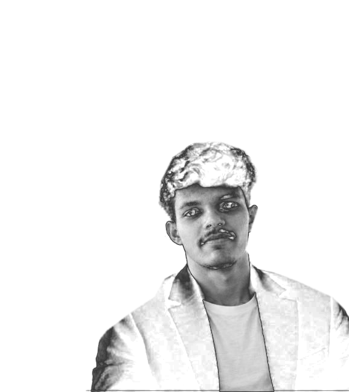

ABOUT.SYS● ONLINE
I enjoy turning complicated problems into approachable products. My interests span AI-powered tools, full-stack applications, and interfaces that feel as good as they work.
Hey, I'm Sreerang — an AI and full-stack developer exploring the space between useful software, intelligent systems, and delightful user experiences.

01 / THE PERSON
A little context about how I think and what I like to build.
I enjoy turning complicated problems into approachable products. My interests span AI-powered tools, full-stack applications, and interfaces that feel as good as they work.
Start with a real problem and build for the person experiencing it.
Care about the details, the architecture, and the whole experience.
Build, get feedback, improve, and repeat.
02 / THE TOOLKIT
A living toolkit — always growing as I build.
03 / SELECTED WORK
Experiments, tools, and projects from the build log.
04 / OPEN CHANNEL
I'm interested in thoughtful collaborations, interesting engineering challenges, and products that make a difference.
Or find me on GitHub